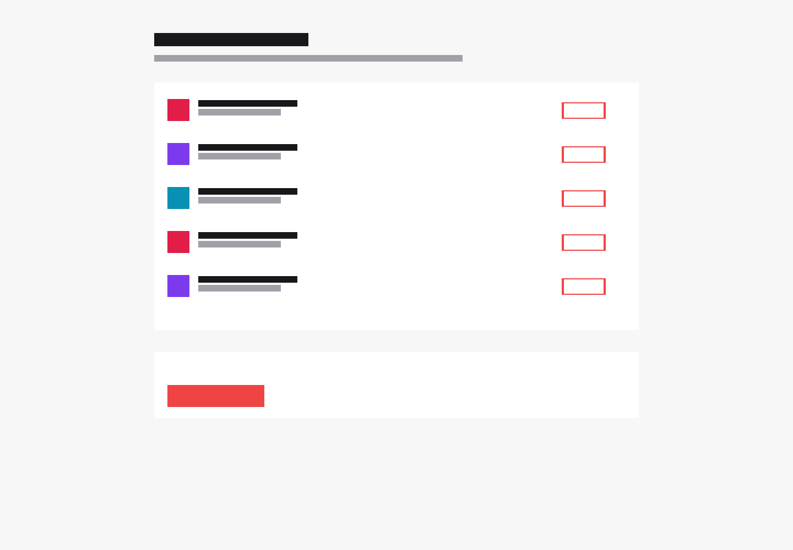
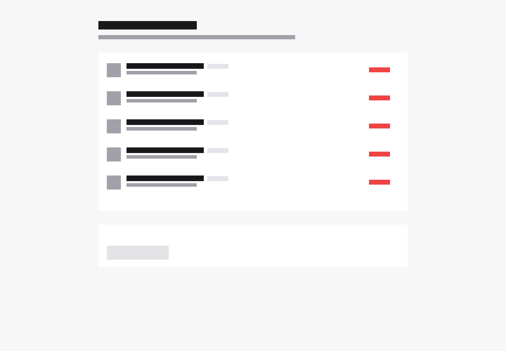
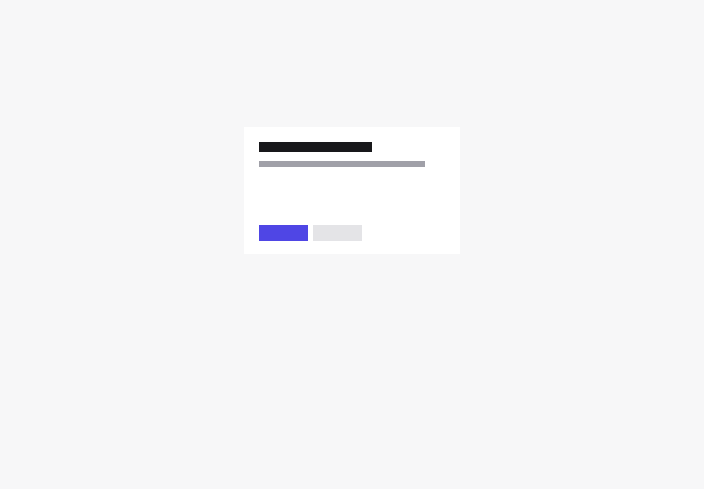
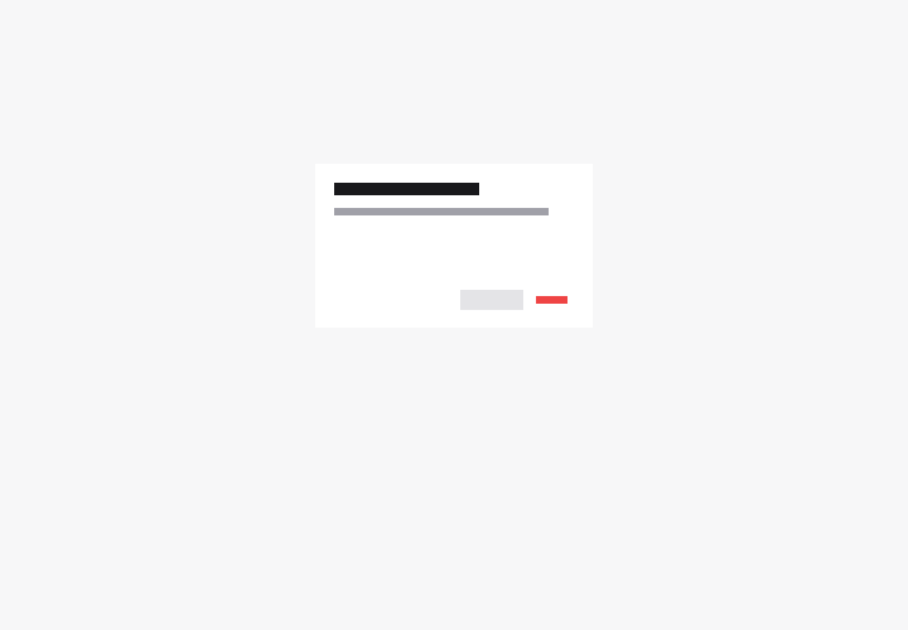

Hill-climbing the connected apps page. Rounds 0-2 are scored; round 3 is shown as judging until its scores are filled in.
| Surface | Round 0 | Round 1 | Round 2 | Round 3 | Latest verdict |
|---|---|---|---|---|---|
| Apps list | 5 | 7.5+2.5 | 8.5+1 | Judging… | |
| Revoke confirm | 4 | 8+4 | 8.5+0.5 | Judging… | |
| Policy card | 6 | 8+2 | 8.8+0.8 | Judging… |
Rounds 1 and 2 combined: hierarchy, quiet revoke, chips, confirm copy, policy refresh. Orange pins mark round 0, blue pins mark round 2. Hover a change to find its pins.



